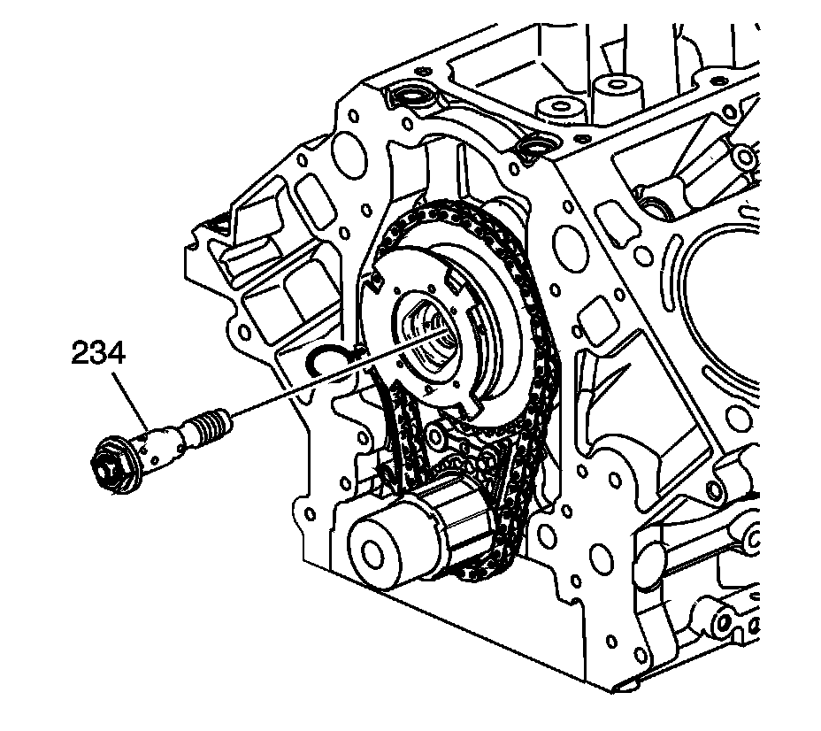
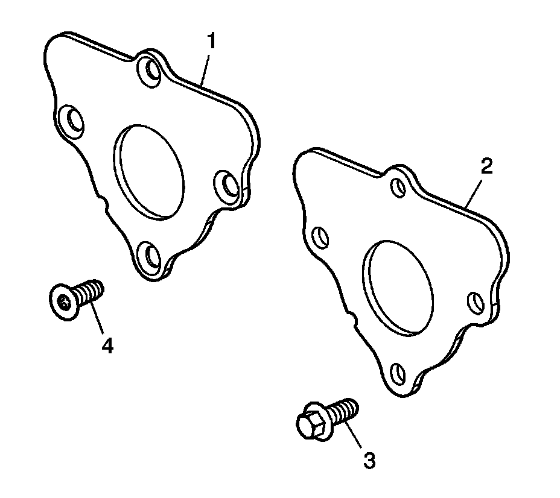
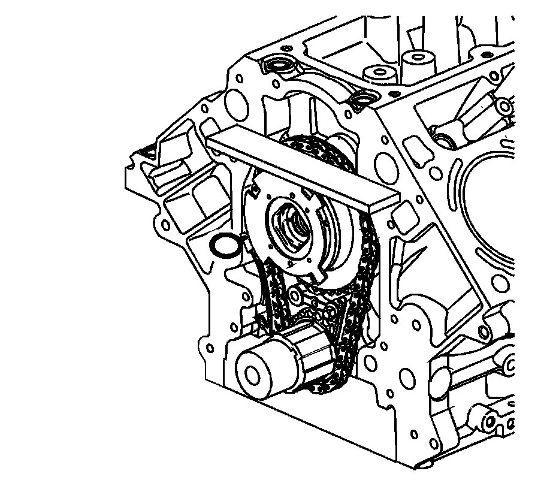

Camshaft: Service and Repair
Camshaft Replacement (RPOs LY6/L76/L92)
Tools Required
^ EN 46330 Timing Belt Tensioner Retaining Pin
^ J 42386-A Flywheel Holding Tool
^ J 45059 Angle Meter
Removal Procedure
Important: If camshaft replacement is required, the valve lifters must also be replaced.

1. Remove the radiator support.
2. Remove the valve lifters.
3. Remove the engine front cover.
4. Remove the starter motor.
Notice: Refer to Fastener Notice.
Important: Ensure that the teeth of the J 42386-A mesh with the teeth of the engine flywheel.
5. Install the J 42386-A (1) and bolts. Use one M10-1.5 x 120 mm and one M10-1.5 x 45 mm bolt for proper tool operation.
Tighten the J 42386-A bolts to 50 N.m (37 lb ft).

6. Rotate the crankshaft sprocket until the camshaft position (CMP) actuator alignment mark (1) and the crankshaft sprocket alignment mark (2) are aligned.

7. Remove and discard the CMP actuator solenoid valve (234).

Notice: Do not turn the crankshaft assembly after the timing chain has been removed in order to prevent damage to the piston assemblies or the valves.
8. Remove the CMP actuator (235) and timing chain (208).

9. Remove the camshaft retainer bolts (204) and retainer (203).

Notice: All camshaft journals are the same diameter, so care must be used in removing or installing the camshaft to avoid damage to the camshaft bearings.
10. Install the camshaft sprocket bolt into the camshaft front bolt hole.
11. Using the bolt as a handle, carefully rotate and remove the camshaft from the engine block.
12. Remove the bolt from the camshaft.
Installation Procedure
1. Lubricate the camshaft journals and the bearings with clean engine oil.
2. Install the camshaft sprocket bolt into the camshaft front bolt hole.
Notice: All camshaft journals are the same diameter, so care must be used in removing or installing the camshaft to avoid damage to the camshaft bearings.
3. Using the bolt as a handle, carefully install the camshaft into the engine block.
4. Remove the bolt from the front of the camshaft.
Important: The gasket surface on the engine block should be clean and free of dirt and/or debris.
5. Install the camshaft retainer (203) and bolts (204). Install the retainer with the sealing gasket facing the engine block.

6. Tighten the camshaft retainer bolts.
^ Tighten the first design hex head bolts (3) to 25 N.m (18 lb ft).
^ Tighten the second design TORX(R) head bolts (4) to 15 N.m (11 lb ft).

7. Compress the timing chain tensioner guide and install the EN 46330.

Important:
^ Properly locate the CMP actuator onto the locating pin of the camshaft.
^ The sprocket teeth and timing chain teeth must mesh.
^ The camshaft and the crankshaft sprocket alignment mark MUST be aligned properly.
^ Do not use the CMP solenoid valve again. Install a NEW valve during assembly.
Identify the alignment hole (1) in the rear face of the CMP actuator and the locating pin (2) on the front face of the camshaft.
8. Align the CMP actuator so the timing mark is in the 6 o'clock position.
9. Install the CMP actuator (235) and timing chain (208). Align the hole in the face of the CMP actuator with the locating pin on the front face of the camshaft.

10. Place a straight edge across the front face of the engine block and inspect for proper installation of the CMP actuator and timing chain. With the CMP actuator properly and completely installed onto the front of the camshaft, the timing chain will not protrude beyond the front face of the engine block.
11. Install a NEW CMP actuator solenoid valve (234). With the CMP actuator properly positioned onto the camshaft, the CMP actuator solenoid valve can be threaded completely into the camshaft using light hand pressure. Tighten by hand until snug.
12. Inspect the sprockets for proper alignment. The mark on the CMP actuator sprocket (1) should be located in the 6 o'clock position and the mark on the crankshaft sprocket (2) should be located in the 12 o'clock position.

13. Remove the EN 46330.

14. Tighten the CMP actuator solenoid valve.
1. Tighten the valve a first pass to 65 N.m (48 lb ft).
2. Tighten the valve a final pass to 90 degrees using J 45059.
15. Remove the J 42386-A (1) and bolts.
16. Install the starter motor.
17. Install the engine front cover.
18. Install the valve lifters.
19. Install the radiator support.